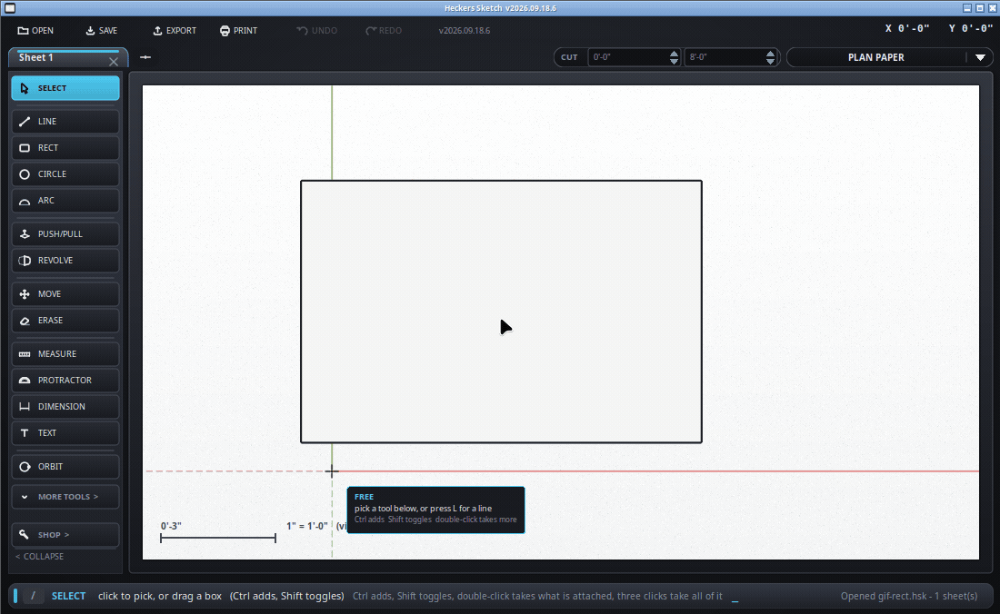

Move what is picked - and stretch whatever is joined to it.
Keyboard: M

| Type | What it does |
|---|---|
6", 2'6, 0-8-8 | That far, in the direction you are already going |
[4,2,0] | Put the handle at that point in the drawing |
<4,2,0> | Move it by that much, along each axis |
3x after a copy | Three copies, evenly spaced - see below |
/3 after a copy | Three copies filling the gap you just made |
See typing measurements for the full list of what a length can look like.
Hold Ctrl while moving and the original stays where it was.
Straight after a copy, type 3x for three of them at that spacing,
or /3 to fill the gap you just made with three - which is how
studs, joists or fence posts get laid out.
A corner sitting where a moving corner sits moves too, so whatever is joined on stretches to follow. Move one side of a rectangle and the two sides it joins shrink or grow to meet it, and it is still a rectangle when you let go - the same as SketchUp. While the mouse is down those edges are drawn leaning over to where they are going, so you can see what is coming with it before you commit.
/detach on turns that off: a move then takes what is picked
away on its own and leaves everything else where it is. The ghost turns
amber to say so and the hint line says "on its own". /detach off
puts it back. SketchUp has no such thing; it is here because a line drawn as
a guide to something else should be able to leave without dragging the
something else along.